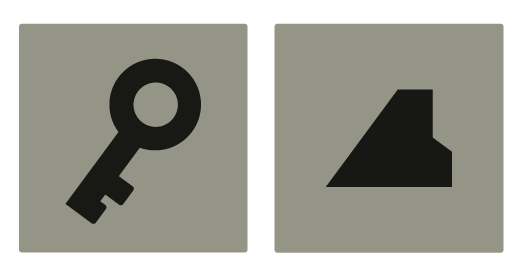

ABOUT
Vivak es un estudio 3D/CGI que tiene como objetivo ampliar y mejorar el imaginario visual de marcas y proyectos personales a través de piezas audiovisuales o frames estáticos que transmitan a través del storytelling.

FILOSOFÍA
Nuestra filosofía se basa en una gran montaña surrealista y en constante transformación en la que cada proyecto debe embarcar una aventura a través de un camino único. Con este concepto, damos a cada idea su atención necesaria y su exploración individual ya que cada ruta se encuentra con piedras diferentes en el camino hasta llegar a la cima.